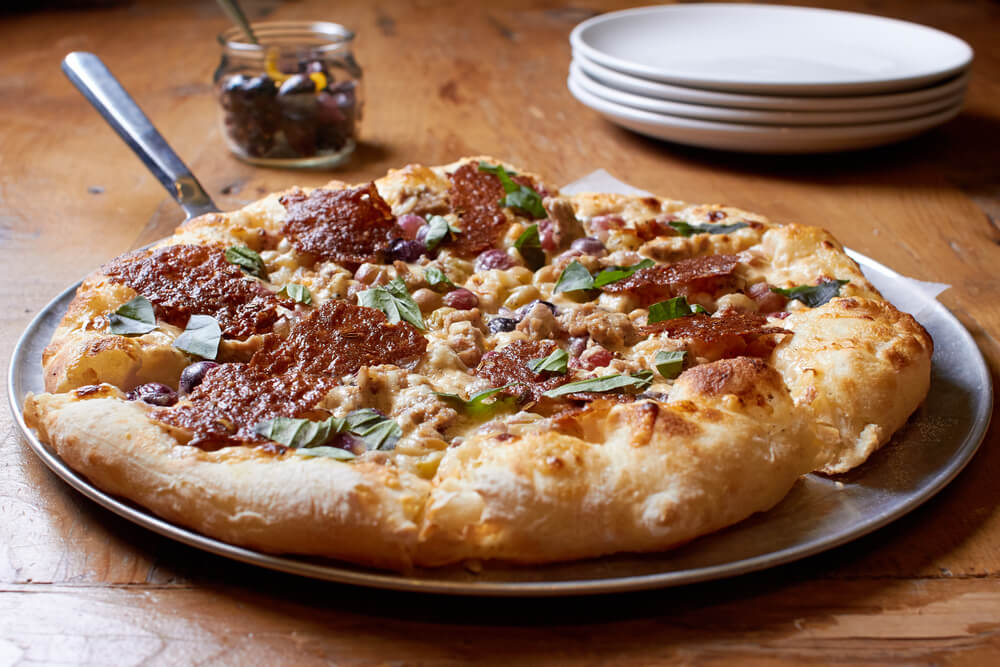

Bubble Pizza

Prep time: 20min Cook time: 30 mins
Total time: 50min Servings: 8
Ingredients:
- 1 pound ground beef
- 1/4 pound sliced pepperoni sausage
- 1 (14 ounce) can pizza sauce
- 2 (12 ounce) packages refrigerated buttermilk biscuit dough
- 1/2 onion, sliced and separated into rings
- 1 (10 ounce) can sliced black olives
- 1 (4.5 ounce) can sliced mushrooms
- 1 1/2 cups shredded mozzarella cheese
- 1 cup shredded Cheddar cheese
Steps
- Preheat oven to 400 degrees F (200 degrees C). Grease a 9x13 inch baking dish. Place ground beef in a large, deep skillet. Cook over medium high heat until evenly brown. Stir in pepperoni, and cook until browned. Drain excess fat. Stir in pizza sauce. Remove from heat, and set aside.
- Cut biscuits into quarters, and place in the bottom of baking dish. Spread meat mixture evenly over the biscuits. Sprinkle top with onion, olives and mushrooms.
- Bake uncovered in preheated oven for 20 to 25 minutes. Sprinkle top with mozzarella and Cheddar cheese. Bake an additional 5 to 10 minutes, until cheese is melted. Let stand 10 minutes before serving.